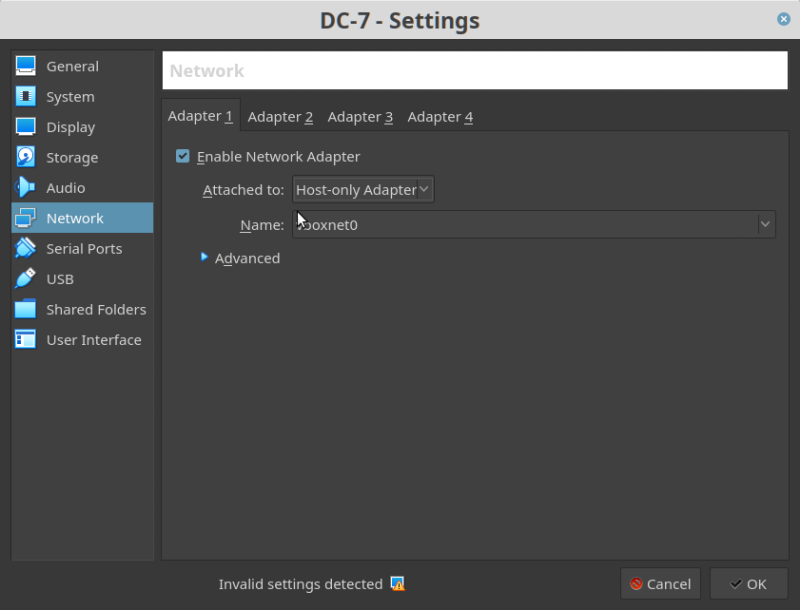

DC-7
▸ DC-7
▸ 1. Scan Network
▸ 2. Finding Services and Ports
▸ 3. Enumerate
▸ 4. Exploit
▸ 4.1 Connect with SSH
▸ 4.1.1 Drush
▸ 4.2 Injecting PHP module
▸ 5. Privilege Escalation
▸ 5.1 Generate code with msfvenom
▸ 6. Catch the flag
Difficulty: Intermediate.
Flag: 1 flag.
Learning:
• Nmap
• Footprinting
• SSH login
• Abusing Drupal Drush
• Compromising webshell via PHP Backdoor
• Abusing writable Script
• Capture the Flag
• Download: http://www.five86.com/downloads/DC-7.zip
• Download (Mirror): https://download.vulnhub.com/dc/DC-7.zip
• Download (Torrent): https://download.vulnhub.com/dc/DC-7.zip.torrent
Install the machine on VirtualBox:
1. Download the file and extract it.
2. On Virtualbox choose File->Import Appliance.
3. Select the file “ova”.
4. Accept to import.


Watch your Machine IP.
Output:

Diagram
 Index
Index